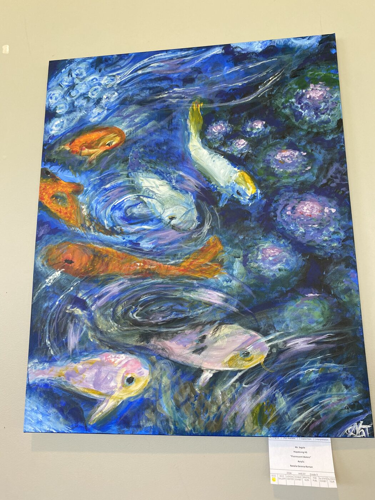
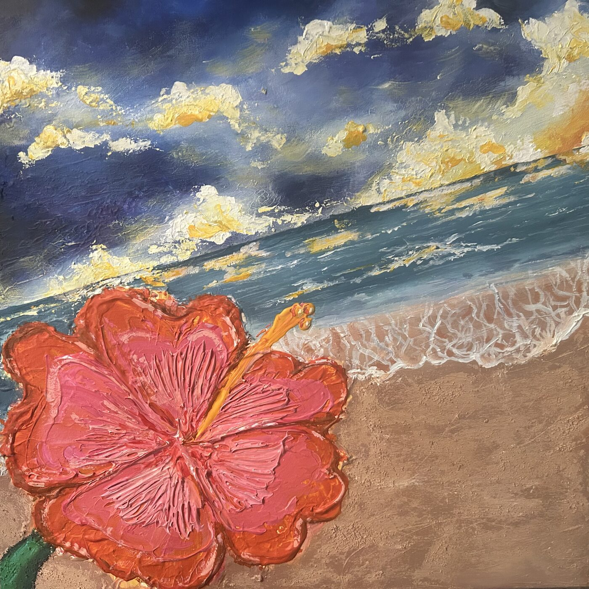
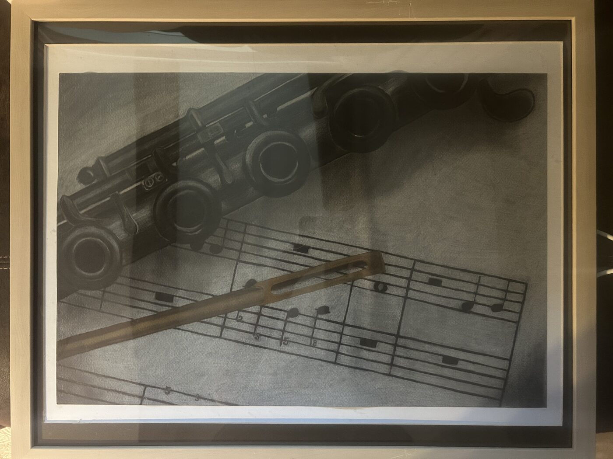
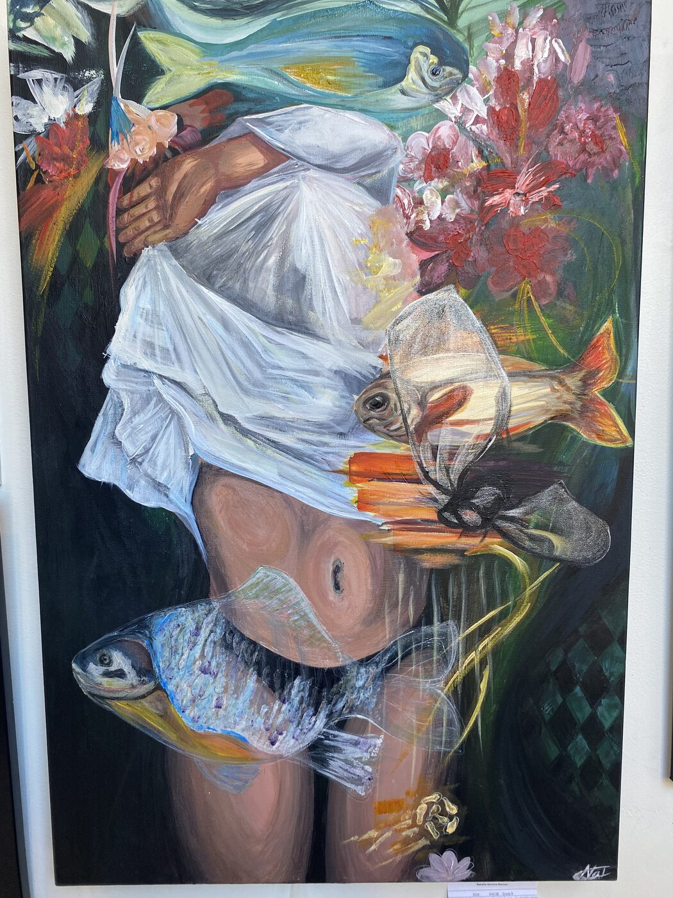
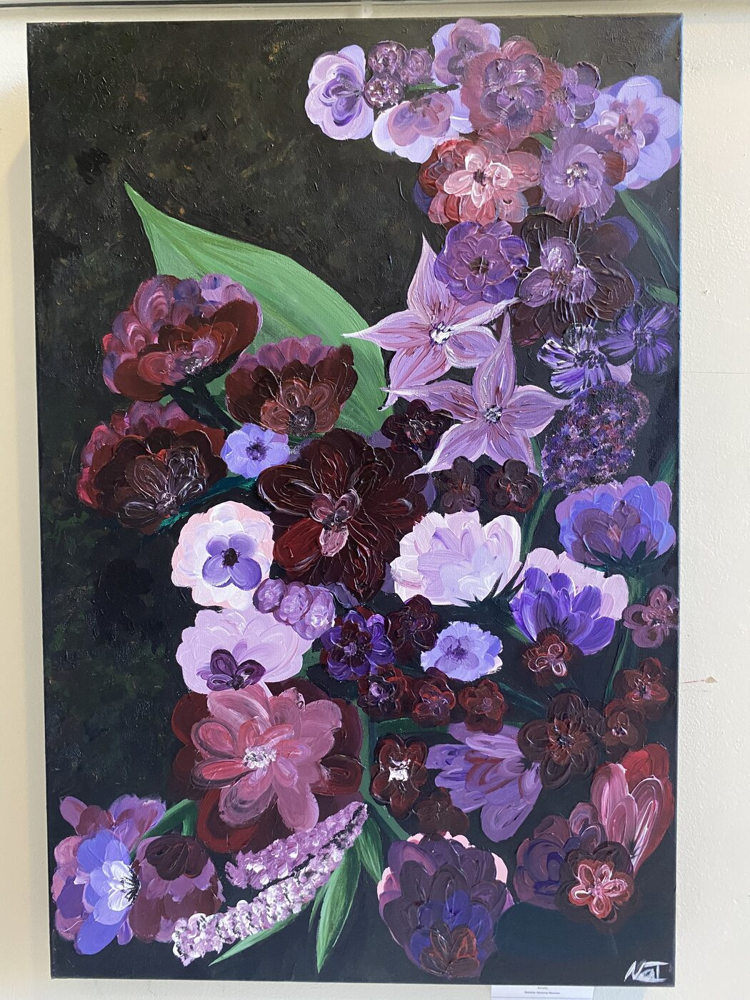
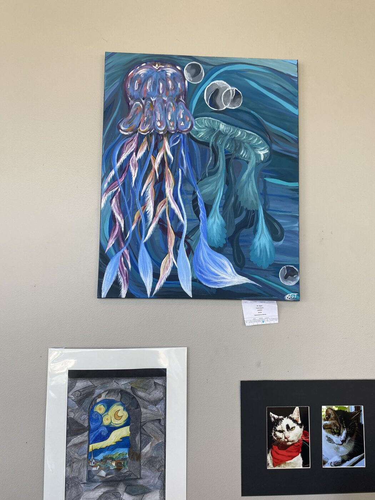
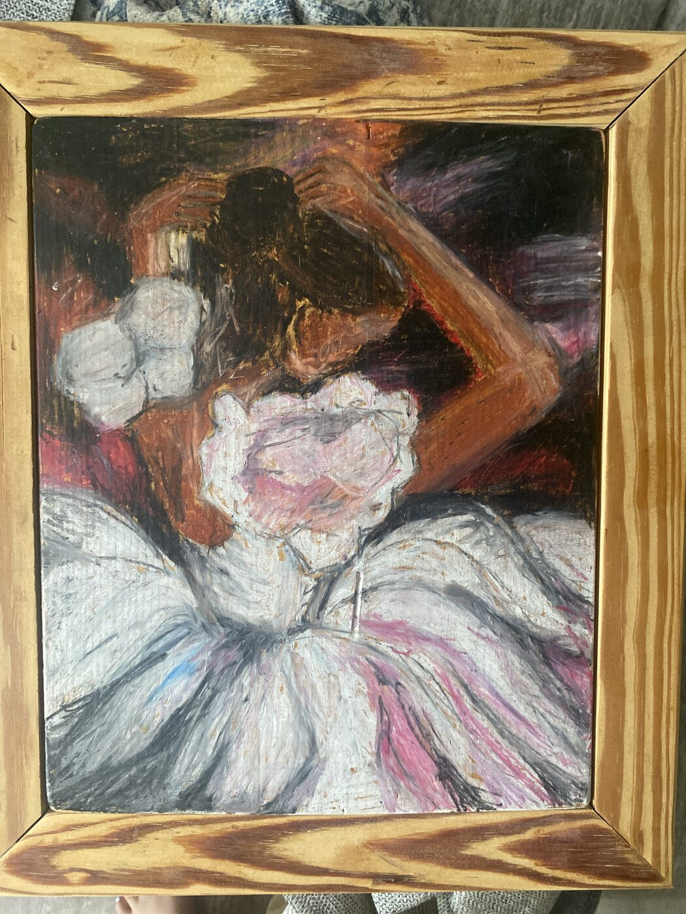
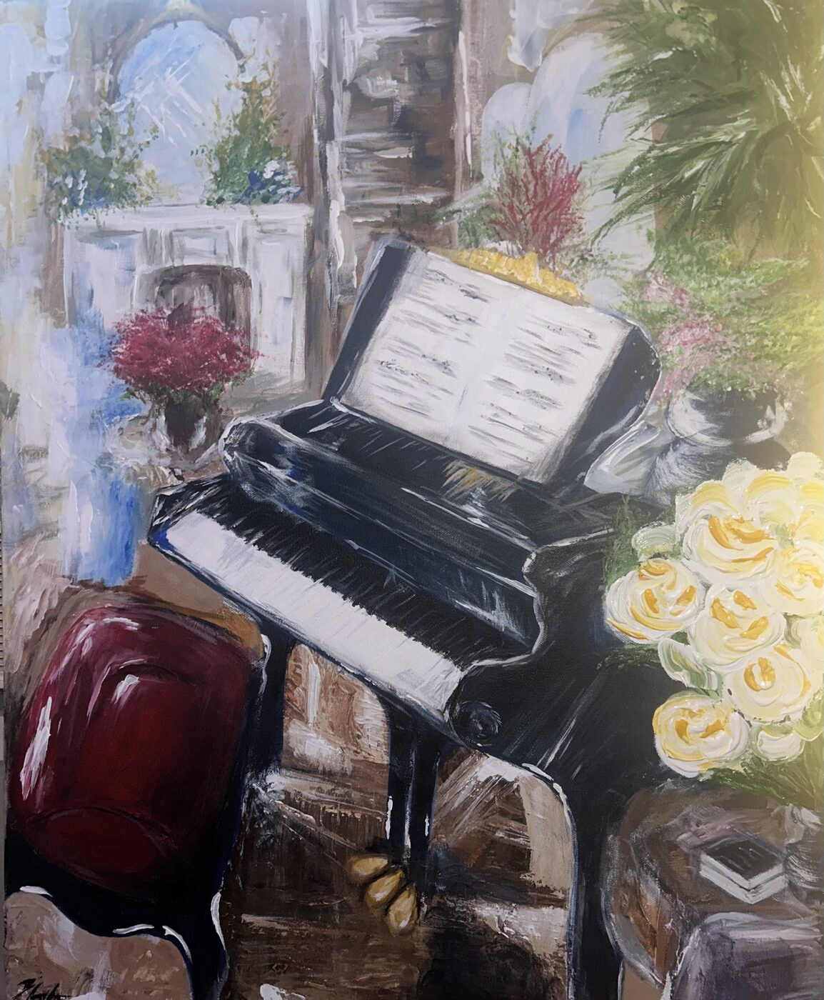

Where visual art meets the same hands that hold a flute — a gallery of paintings and drawings made alongside the music.

Sussex County Community College Performing Arts Center Exhibit

Sussex County Community College Gallery

New Jersey State Teen Arts Exhibit

Judicial Center Exhibit · Sussex County Arts & Heritage Exhibit · Published in the 2024 Idiom & Image

Judicial Center Exhibit · Published · New Jersey State Teen Arts Exhibit

Bristol Glen Exhibit


Sussex County Community College Gallery